In today’s class, we will begin to explore how R can be used to make graphics from data, making customized static graphics with the ggplot2 package. This is part of Hadley Wickham’s tidyverse, so you already have it installed from last week.
Download the data for this session from here, unzip the folder and place it on your desktop. It contains the following files:
disease_democ.csv Data illustrating a controversial theory suggesting that the emergence of democratic political systems has depended largely on nations having low rates of infectious disease, from the Global Infectious Diseases and Epidemiology Network and Democratization: A Comparative Analysis of 170 Countries, as used in week 1.food_stamps.csv U.S. Department of Agriculture data on the number of participants, in millions, and costs, in $ billions, of the federal Supplemental Nutrition Assistance Program.nations.csv Data from World Bank World Development Indicators portal, giving data on population, GDP per capita, life Expectancy, birth rate, neonatal mortality rate, region and income group for the world’s nations, from 1990 onwards, as used in week 3.The “gg” in ggplot2 stands for “grammar of graphics,” an approach to drawing charts devised by the statistician Leland Wilkinson. Rather than thinking in terms of finished charts like a scatter plot or a column chart, it starts by defining the coordinate system (usually the X and Y axes of a cartesian system), maps data onto those coordinates, and then adds layers such as points, bars and so on. This is the logic behind ggplot2 code.
Some key things to understand about ggplot2:
ggplot This is the master function that creates a ggplot2 chart.aes This function, named for “aesthetic mapping,” is used whenever data values are mapped onto a chart. So it is used when you define which variables are plotted onto the X and Y axes, and also if you want to change the size or color of parts of the chart according to values for a variable.geom All of the functions that add layers to a chart start with geom, followed by an underscore, for example geom_point() or geom_bar(). The code in the brackets for any geom layer styles the items in that layer, and can include aes mappings of values from data.+ is used each time you add a layer to a chart. After a + you can continue on the same line of code or move the next line. I usually write a new line for each layer, which makes the code easier to follow.theme This function modifies the appearance of elements of a plot, used, for example, to set size and font face for text, the position of a legend, and so on.scale Functions that begin with scale, followed by an underscore, are used to modify the way an aes mapping of data appears on a chart. They can change the axis range, for example, or specify a color palette to be used to encode values in the data.We’ll start by making and modifying a scatter plot from the disease and democracy data that we first encountered in week 1.
Open a new R script in RStudio, save the blank script to the folder with the data for this week, and then set your working directory to this location by selecting from the top menu Session>Set Working Directory>To Source File Location.
Now copy the following code into your script to load readr, ggplot2, and the then load the disease and democracy data:
# load required packages
library(ggplot2)
library(readr)
# load disease and democracy data
disease_democ <- read_csv("disease_democ.csv")
Copy this code into your R script and run:
# map values in data to X and Y axes
ggplot(disease_democ, aes(x = infect_rate, y = democ_score))
The brackets after the ggplot function define the data frame to be used, followed by the aes mapping of variables in the data to the chart’s X and Y axes.
The following chart should appear in the Plots panel at bottom right:
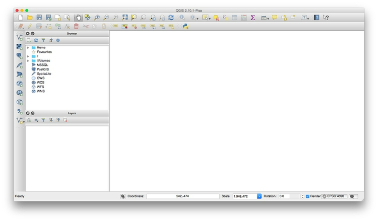
The axis ranges are automatically set to values in the data, but at this point there is just a black chart grid, because we haven’t added any geom layers to the chart.
By default, the axis labels will be the names of the variables of in the data. But it’s easy to customize, using the following code:
# customize axis labels
ggplot(disease_democ, aes(x = infect_rate, y = democ_score)) +
xlab("Infectious disease prevalence score") +
ylab("Democratization score")
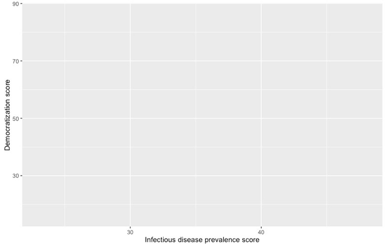
The default gray theme of ggplot2 has a rather academic look. See here and here for how to use the theme option to customize individual elements of a chart. However, for my charts, I typically use one of the ggplot2 built-in themes, and then customize the fonts.
# Change the theme
ggplot(disease_democ, aes(x = infect_rate, y = democ_score)) +
xlab("Infectious disease prevalence score") +
ylab("Democratization score") +
theme_minimal(base_size = 16, base_family = "Georgia")
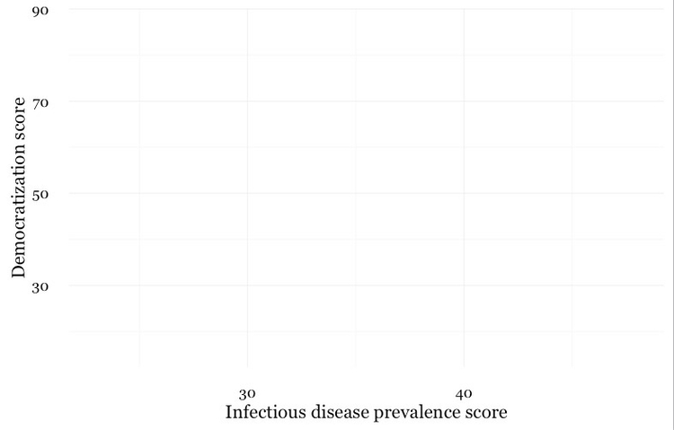
Notice how the base_family and base_size can be used with a built-in theme to change font face and size. R’s basic fonts are fairly limited (run names(postscriptFonts())) to view those available). However, you can use the extrafonts package to make other fonts available.
However, I do not recommend coding your themes manually, certainly not on each chart you draw. Instead, use this web app to set your theme options. When you are statisfied with the appearance of the chart in the app, click the R script for theme (run every R session) button to download your theme as an R script.
However, I do not recommend coding your themes manually, certainly not on each chart you draw. Instead, use this ggplot2 Theme Builder web app to set your theme options. When you are statisfied with the appearance of the chart in the app, click the R script for theme (run every R session) button to download your theme as an R script.
If you then load and run run this script at the start of your R session, your ggplot2 charts for that session will use the downloaded theme.
You can save a ggplot2 chart as an object in your environment using the <- assignment operator. So we’ll do that here to save the basic template, with no geom layers.
# save chart template, and plot
disease_democ_chart <- ggplot(disease_democ, aes(x = infect_rate, y = democ_score)) +
xlab("Infectious disease prevalence score") +
ylab("Democratization score") +
theme_minimal(base_size = 16, base_family = "Georgia")
plot(disease_democ_chart)
There should now be an object of type gg in your Environment called disease_democ_chart.
The plot function will plot a saved ggplot2 object.
This code will add a geom layer with points to the template:
# add a layer with points
disease_democ_chart +
geom_point()
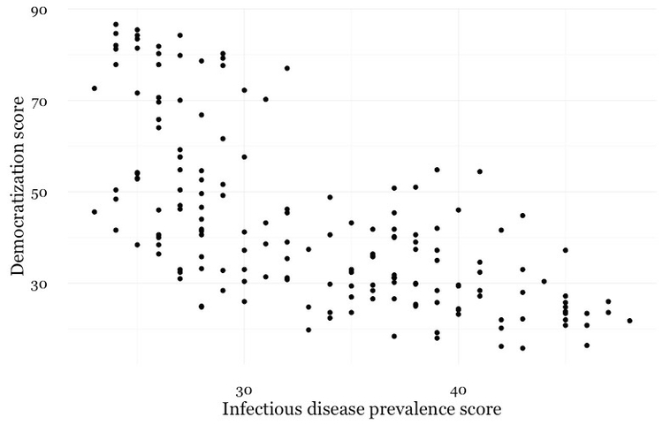
# add a trend line
disease_democ_chart +
geom_point() +
geom_smooth()
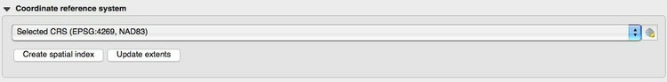
The following code modifies the two geom layers to change their appearance.
# customize the two geom layers
disease_democ_chart +
geom_point(size = 3, alpha = 0.5) +
geom_smooth(method = lm, se=FALSE, color = "red")
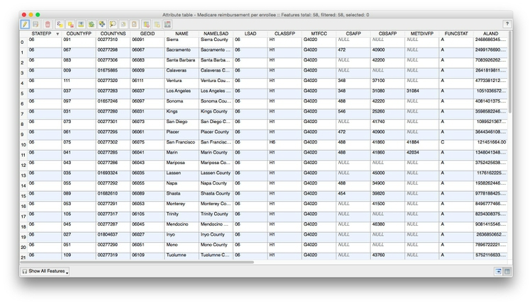
In the geom_point layer, we have increased set size of each point, and reduced its transparency using alpha.
In the geom_smooth function, we have changed the color of the line, removed the ribbon showing the se or “standard error,” a measure of the uncertainty surrounding the fit to the data, and changed the method used to fit the data from a smoothed fit by a method called locally-weighted scatterplot smoothing to a linear regression, or linear model (lm).
When setting colors in ggplot2 you can use their R color names, or their HEX values. This code will produce the same result:
# customize the two geom layers
disease_democ_chart +
geom_point(size = 3, alpha = 0.5) +
geom_smooth(method = lm, se=FALSE, color = "#FF0000")
Until you are familiar with the options for each geom, you will need to look up how to change the appearance of each layer: Follow the links for each geom form here.
The following code customizes the trend line further, and includes an aes mapping in to set the color of the points to that they reflect the categorical variable of World Bank income group.
# customize again, coloring the points by income group
disease_democ_chart +
geom_point(size = 3, alpha = 0.5, aes(color = income_group)) +
geom_smooth(method = lm, se =FALSE, color = "black", linetype = "dotdash", size = 0.3)
Notice how the aes function colors the points by values in the data, rather . ggplot2 recognizes thatincome_group is a categorical variable, and uses its default qualitative color palette.
Now run this code, to see the different effect of setting the aes color mapping for the entire chart, rather than just one geom layer.
# color the entire chart by income group
ggplot(disease_democ, aes(x = infect_rate, y = democ_score, color=income_group)) +
xlab("Infectious disease prevalence score") +
ylab("Democratization score") +
theme_minimal(base_size = 16, base_family = "Georgia") +
geom_point(size = 3, alpha = 0.5) +
geom_smooth(method=lm, se=FALSE, linetype= "dotdash", size = 0.3)
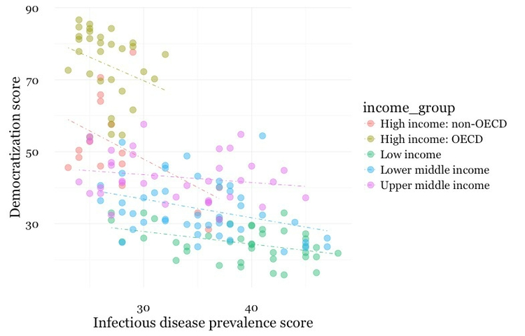
# set the axis ranges, change color palette
disease_democ_chart +
geom_point(size = 3, alpha = 0.5, aes(color = income_group)) +
geom_smooth(method = lm, se = FALSE, color = "black", linetype = "dotdash", size = 0.3) +
scale_x_continuous(limits=c(0,70)) +
scale_y_continuous(limits=c(0,100)) +
scale_color_brewer(name="Income group", palette = "Set1")
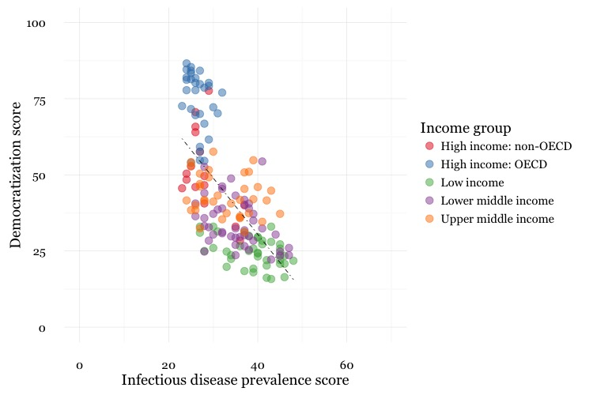
Notice how the first two scale functions are used to set the ranges for the axis, which are entered as a list, using the c function we saw last week.
You can use ColorBrewer qualitative palettes by using the scale_color_brewer function. Add the text you want to appear as a legend title using name.
Having made a series of charts, you can browse through them using the blue arrows at the top of the Plots tab in the panel at bottom right. The broom icon will clear all of your charts; the icon to its immediate left remove the chart in the current view.
You can export any chart by selecting Export>Save as Image.... At the dialog box, you can select the desired image format, and size. If you wish to edit or annotate the chart in a vector graphics editor such as Abode Illustrator, export as an SVG file.
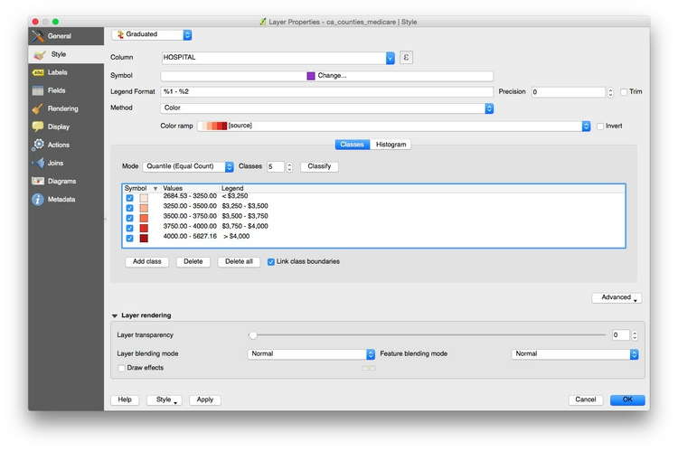
You can also save your final ggplot2 chart as an object in your R environment:
# save final disease and democracy chart
final_disease_democ_chart <- disease_democ_chart +
geom_point(size = 3, alpha = 0.5, aes(color = income_group)) +
geom_smooth(method = lm, se = FALSE, color = "black", linetype = "dotdash", size = 0.3) +
scale_x_continuous(limits = c(0,70)) +
scale_y_continuous(limits = c(0,100)) +
scale_color_brewer(name = "Income group", palette = "Set1")
Now we will explore a series of other geom functions using the food stamps data.
# load data
food_stamps <- read_csv("food_stamps.csv")
# save basic chart template
food_stamps_chart <- ggplot(food_stamps, aes(x = year, y = participants)) +
xlab("Year") +
ylab("Participants (millions)") +
theme_minimal(base_size = 16, base_family = "Georgia")
# line chart
food_stamps_chart +
geom_line()
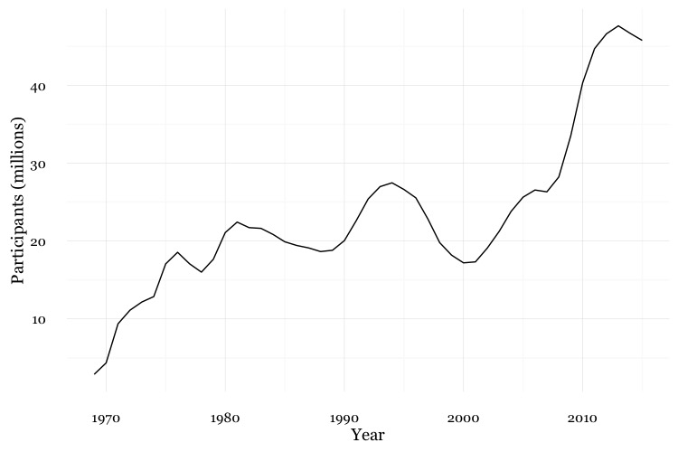
# customize the line, add a title
food_stamps_chart +
geom_line(size = 1.5, color = "red") +
ggtitle("Line chart")
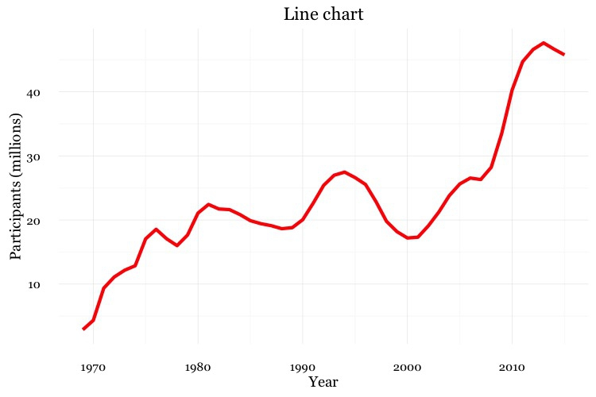
The function ggtitle adds a title to the chart.
# Add a second layer to make a dot-and-line chart
food_stamps_chart +
geom_line() +
geom_point() +
ggtitle("Dot-and-line chart")
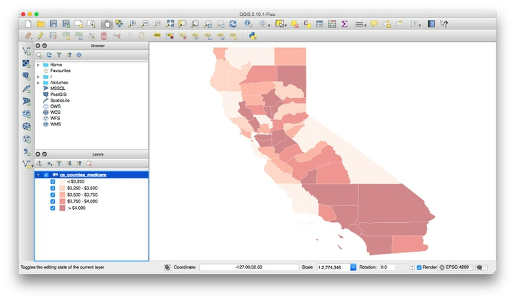
# Make a column chart
food_stamps_chart +
geom_bar(stat = "identity") +
ggtitle("Column chart")
``

`geom_bar` works a little differently to the `geoms` we have considered previously. If you have not mapped data values to the Y axis with `aes`, its default behavior is to set the heights of the bars by counting the number of records for values along the X axis. If you have mapped a variable to the Y axis, and want the heights of the bars to represent values in the data, use you must use `stat="identity"`.
```r
# Make a bar chart
food_stamps_chart +
geom_bar(stat = "identity") +
ggtitle("Bar chart") +
coord_flip()
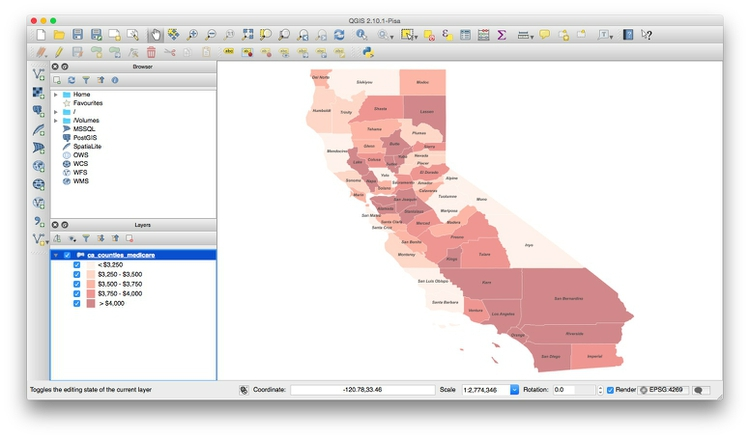
coord_flip switches the X and Y axes.
For some geoms, notably geom_bar, you can set color for their outline as well as the color used to fill the shapes.
# set color and fill
food_stamps_chart +
geom_bar(stat = "identity", color = "#888888", fill = "#cccccc", alpha = 0.5) +
ggtitle("Column chart")
When setting colors, color refers to the outline, fill to the interior of the shape.
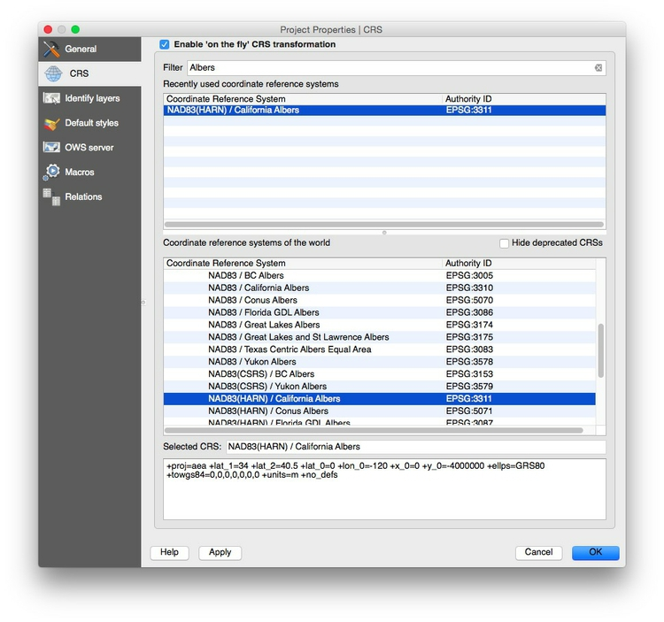
# fill the bars according to values for the cost of the program
food_stamps_chart +
geom_bar(stat = "identity", aes(fill = costs))
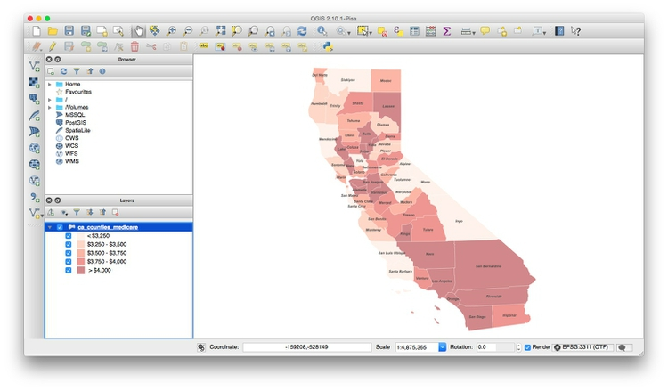
This code uses an aes mapping to color the bars according values for the costs of the program, in billions of dollars. ggplot2 recognizes that costs is a continuous variable, but its default sequential scheme applies more intense blues to lower values, which is counterintuitive.
# use a colorbrewer sequential palette
food_stamps_chart +
geom_bar(stat = "identity", color = "#888888", aes(fill = costs)) +
scale_fill_distiller(name = "Cost\n($ billion)", palette = "Reds", direction = 1)
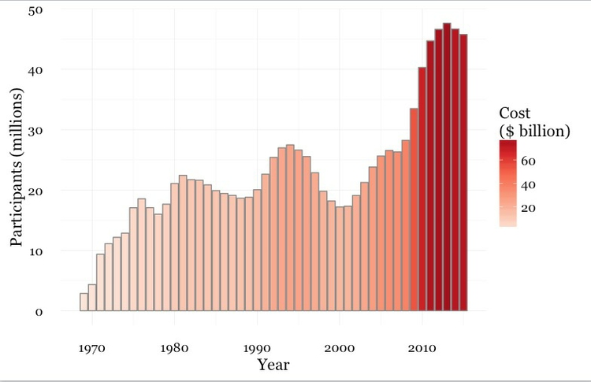
scale_fill_distiller (and scale_color_distiller) work like scale_color_brewer, but set color gradients for ColorBrewer’s sequential and diverging color palettes; direction = 1 ensures that larger numbers are mapped to more intense colors (direction = -1 reverses the color mapping).
Notice also the \n in the title for the legend. This introduces a new line.
This code uses the theme function to moves the legend from its default position to the right of the chart to use some empty space on the chart itself.
food_stamps_chart +
geom_bar(stat="identity", color = "#888888", aes(fill=costs)) +
scale_fill_distiller(name = "Cost\n($ billion)", palette = "Reds", direction = 1) +
theme(legend.position=c(0.15,0.8))
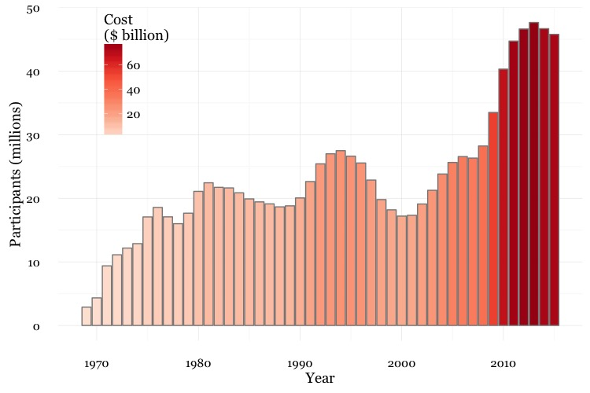
The coordinates for the legend are given as a list: The first number sets the horizontal position, from left to right, on a scale from 0 to 1; the second number sets the vertical position, from bottom to top, again on a scale form 0 to 1.
The ggplot2 extensions page documents a series of packges that extend the capabilities of ggplot2. See the gallery.
Winston Chang: R Graphics Cookbook
(Chang also has a helpful website with much of the same information, available for free.)
Hadley Wickham: ggplot2: Elegant Graphics For Data Analysis
ggplot2 cheat sheet from RStudio.
ggplot2 and dplyr tutorials from Paul Hiemstra.
Stack Overflow
Search the site, or browse R questions